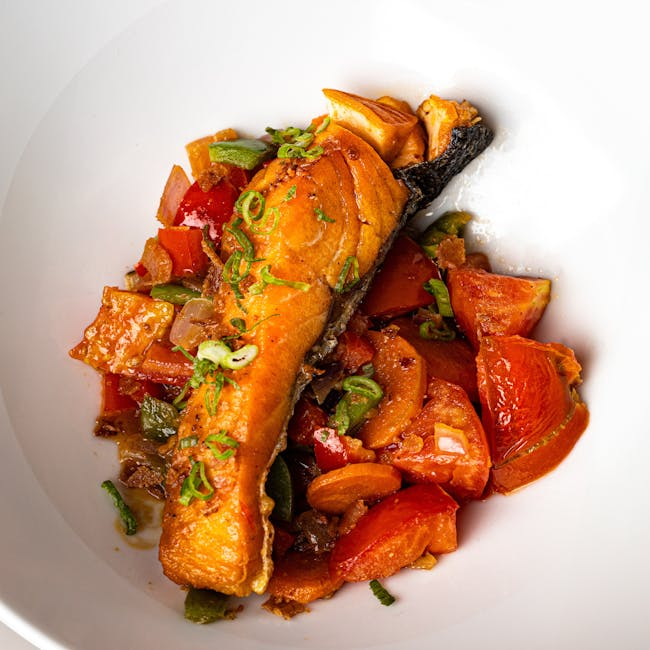

← Back to all nutrition guides | About Our Content
Healthy Options At A Restaurant For Weight Loss
Reviewed by The Today's Food Coach Team
Our team of nutrition researchers and AI specialists ensures every guide is accurate and practical.
A realistic guide for busy professionals over 40.
Eating out can be a challenge for men aged 40 to 65 who want to lose weight and pursue healthier eating habits without the overwhelming task of calorie counting. Thankfully, many restaurants offer healthy options that not only support weight loss but also taste great. By making informed choices, you can enjoy dining out while still adhering to your fitness goals. Being aware of how to navigate menus and select meals packed with nutrients will help you avoid hidden calories and unhealthy ingredients. Instead of obsessively counting calories, focus on choosing balanced meals that nourish your body. Here’s how to find healthy options at a restaurant that align with your weight loss journey.
Want a personalized version of this strategy?
Try the AI Food Coach
Why Healthy Options At A Restaurant For Weight Loss Matters
Maintaining a healthy diet is vital for men aged 40 to 65 as metabolism naturally slows with age, and the risk of chronic diseases increases. When making dining choices, selecting meals that are lower in calories but high in nutrition can lead to sustainable weight loss and improved overall health. Additionally, making wise choices at restaurants helps prevent weight gain and unnecessary indulgence in high-calorie dishes. When dining out, understanding portion sizes and the types of foods that are beneficial for your body empowers you to enjoy meals without guilt. Furthermore, eating healthier not only aids in weight loss but also supports energy levels, enhances mood, and boosts overall well-being. Knowing how to identify healthy options at a restaurant sets the foundation for long-term habits rather than short-term restrictions, making it easier to integrate healthy eating into your lifestyle. It can also positively influence social interactions, allowing you to enjoy outings with family and friends while prioritizing health.
Simple Strategy
- Choose dishes that emphasize vegetables, lean proteins, and whole grains.
- Opt for grilled, baked, or steamed preparations instead of fried items.
- Request dressings and sauces on the side to control your intake.
These strategies work best when personalized to your lifestyle and goals.
Build Your Personalized Nutrition Plan
Most people know what foods are healthy. The hard part is knowing what to eat today. Today's Food Coach creates a simple, personalized daily plan based on your goals and lifestyle.
Start Your PlanExample Day of Eating
Start your day with a protein-rich breakfast such as scrambled eggs with spinach and whole-grain toast. For lunch, consider a salad topped with grilled chicken and plenty of colorful veggies. When dining out for dinner, choose a fish dish paired with roasted vegetables and a side of quinoa for a balanced meal that promotes weight loss.
Common Mistakes
- Relying solely on portion sizes rather than nutritional content.
- Ignoring hidden calories in beverages and dressings.
- Choosing comfort food options that are typically higher in calories.
Practical Tips
- Always check the menu ahead of time to plan your meal decisions.
- Share dishes with others to avoid overeating while enjoying a variety of flavors.
- Stay hydrated by drinking water before meals to help control appetite.
Frequently Asked Questions
How can I resist temptation when dining out?
Focus on your health goals and remind yourself that there are always healthy options available.
Are all salads healthy options?
Not necessarily; be mindful of high-calorie toppings and dressings that can turn a salad into a calorie bomb.
What can I do if the restaurant lacks healthy choices?
Consider asking the chef for modifications or substituting sides to make your meal healthier.
Related Nutrition Guides
- Best Restaurant Meals For Weight Loss Men
- How To Stay Consistent With Weight Loss Over 40
- What To Order At A Mexican Restaurant On A Diet
Try Today's Food Coach
Generate a personalized meal strategy based on your lifestyle and goals.
Try the AI Food Coach